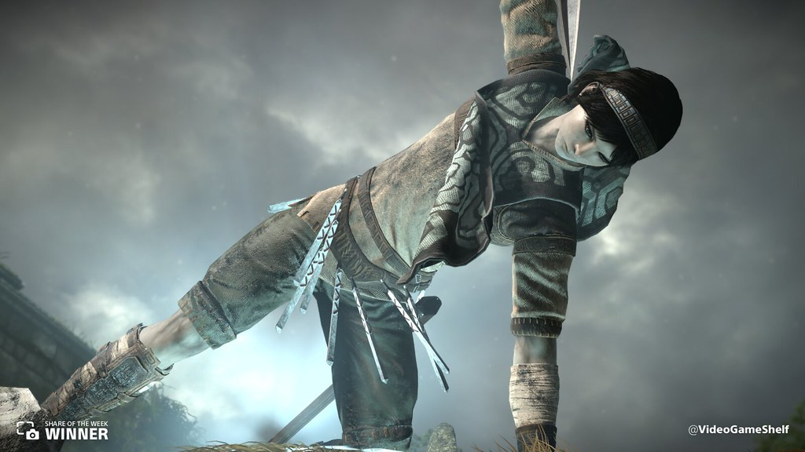
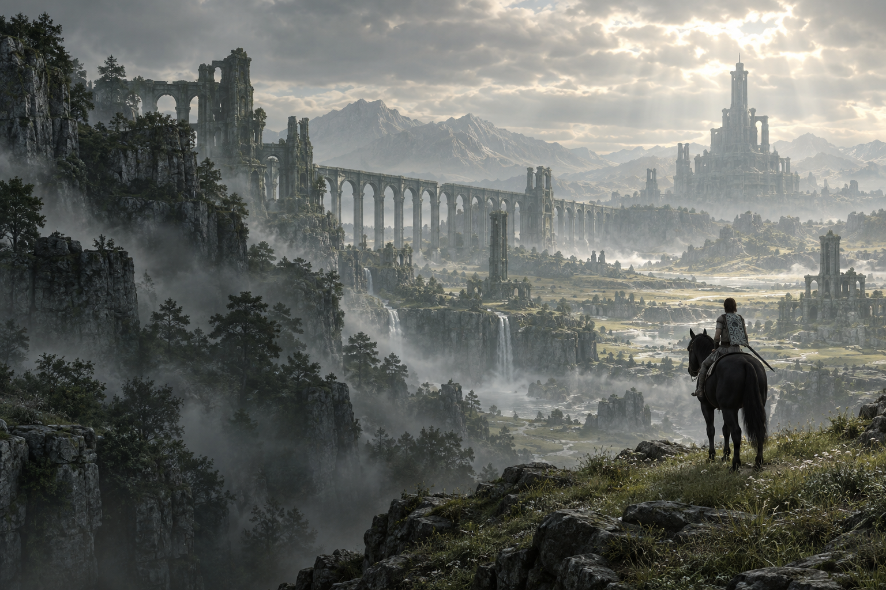

Um desenho familiar
Os motivos de seu manto lembram os sinais vitais dos colossos. A semelhança visual não explica, por si só, a origem da roupa.

01 / Além da coragem
Wander chega às Terras Proibidas levando Mono ao Santuário da Adoração. Seu desejo é devolver a vida à jovem. Para isso, aceita a tarefa apresentada por Dormin: derrotar os dezesseis colossos que habitam aquele lugar.
Ao lado de Agro, ele atravessa planícies, ruínas e desertos. Diante de criaturas imensas, sua força está em observar, encontrar um caminho e continuar mesmo quando cada passo parece impossível.
Cada vitória liberta um fragmento de Dormin, que entra no corpo de Wander. Ao derrotar o último colosso, ele reúne a entidade que havia sido dividida e selada nos dezesseis gigantes.
Lorde Emon chega ao santuário com seus homens, e Wander é ferido. Dormin toma seu corpo e se manifesta como um gigante de sombras. Emon lança a espada na fonte, criando um vórtice que absorve a entidade e Wander.
Mono desperta, e Agro retorna ferida. Na fonte esvaziada, Mono encontra um bebê com pequenos chifres — Wander, agora em uma nova forma. Ela o leva consigo e segue Agro até o jardim no alto do santuário.
02 / Antes das Terras Proibidas
O jogo não apresenta uma biografia completa de Wander. Sua infância, família e formação permanecem sem explicação; também não define claramente a natureza de sua relação com Mono.
Wander conta que Mono foi sacrificada por ser considerada portadora de um destino amaldiçoado. Para tentar salvá-la, rouba a espada ancestral e entra nas Terras Proibidas; no final, Emon o acusa dessas transgressões.
Ele já sabe cavalgar e manejar o arco, mas o jogo não explica onde aprendeu. A ligação exata entre Wander e Mono permanece indefinida.
A origem exata do personagem continua aberta à interpretação. Teorias de fãs não são tratadas aqui como fatos.
03 / A aparência
Wander é um jovem de constituição esguia, com cabelos castanho-avermelhados e uma faixa na cabeça. Sobre a roupa em tons terrosos, usa um tecido com desenhos geométricos que torna sua silhueta reconhecível.
Faixas nos braços, proteções nas pernas e a bainha à cintura completam seu traje leve. Diante dos gigantes, essa silhueta humana evidencia sua vulnerabilidade.
A aparência amaldiçoada
Conforme absorve os fragmentos de Dormin, sua pele empalidece, o cabelo escurece e marcas sombrias aparecem no rosto. As roupas ficam sujas e desgastadas, tornando a mudança cada vez mais visível.
Depois do último colosso, Wander apresenta olhos muito claros e dois pequenos chifres. A possessão por Dormin culmina em uma forma gigantesca de sombras. No final, os chifres permanecem no bebê encontrado por Mono.

04 / Uma presença no silêncio
Entre um encontro e outro, há o som dos cascos e a vastidão da paisagem. Agro acompanha Wander na exploração e participa de momentos em que a confiança entre os dois se torna essencial.
Essa parceria dá uma presença familiar a um mundo tão solitário.
05 / Curiosidades
Os motivos de seu manto lembram os sinais vitais dos colossos. A semelhança visual não explica, por si só, a origem da roupa.
Wander consegue usar o arco enquanto cavalga e mudar de posição sobre Agro. Sua familiaridade com a montaria aparece nos próprios movimentos.
O modo Foto do remake para PS4 permite observar os detalhes do personagem, ajustar o foco e compor retratos durante a jornada.
Esta ficha inclui spoilers da história e do desfecho. As lacunas sobre o passado de Wander são mantidas como desconhecidas.